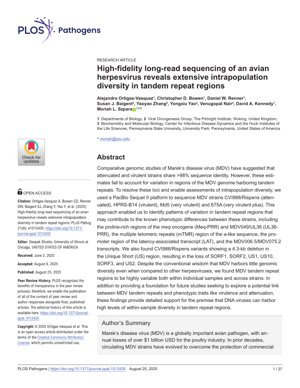
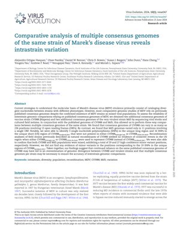
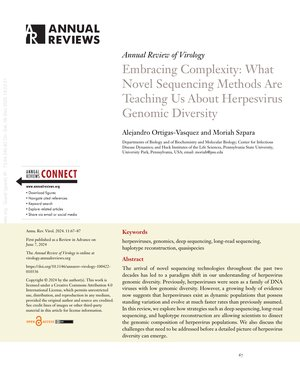

2025
High-fidelity long-read sequencing of an avian herpesvirus reveals extensive intrapopulation diversity in tandem repeat regions
PLOS Pathogens, Vol. 21, e1013435 (2025)

2024
Comparative analysis of multiple consensus genomes of the same strain of Marek's disease virus reveals intrastrain variation
Virus Evolution, Vol. 10, veae047 (2024)

2024
Embracing Complexity: What Novel Sequencing Methods Are Teaching Us About Herpesvirus Genomic Diversity
Annual Review of Virology, Vol. 11, pp. 67-87 (2024)

Submitted & In Preparation
2025
Whole-genome sequence of a varicella-zoster virus vaccine-derived strain from an immunocompetent pediatric patient with severe herpes zoster
Submitted
Submitted
2025
Genome-Wide Analyses of an Avian Herpesvirus Identify 10 Loci Associated with Tumorigenicity and Vaccine Escape
Submitted
Submitted
2026
High-Throughput Analyses of Herpes Simplex Tandem Repeat Regions Using Hidden Markov Models Reveal Strain-Specific Patterns of Diversity
In Preparation
In Preparation